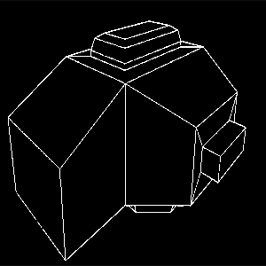

Cleithro (GY-6) is a Gymirean-adapted SRV designed by researcher Sarah Connors in 1266. It was specifically designed for Mission GY-122.
Cleithro is specifically designed for high-pressure environments on Gymir. The interior has large control panels for ease of use with the Gymir Specialized AMS.